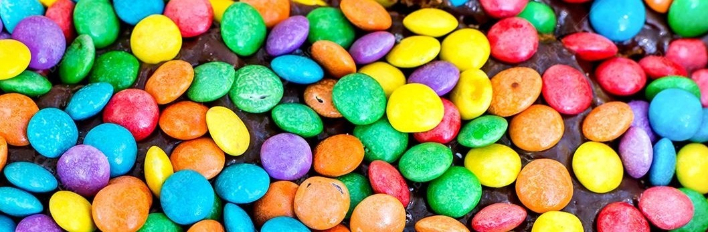

Receita
Ingredientes (50 porções)
Massa
- 1 kg de farinha de trigo.
- 3/4 xícara (chá) de açúcar refinado (125 g).
- 1 colher (sopa) de sal.
- 500 a 700ml de água morna.
- 125 ml de óleo vegetal.
Recheio de chocolate
- 1 barra de Chocolate Blend.
- 1 caixa de creme de leite.
Decoração
- 1 pacote de confetes coloridos

Modo de Preparo
- Misture a farinha de trigo, o açúcar, o sal, a margarina, as gemas, o tablete de fermento e o leite.
- Amasse até formar uma massa lisa e homogênea.
- Deixe a massa descansar aproximadamente 10 minutos.
- Divida a massa em pedaços pequenos e faça bolinhas.
- Envolva-as no fubá e deixe descansar por mais 5 minutos.
- Abra as bolinhas em pequenos discos e recheie com chocolate.
- Leve ao forno médio (170 ºC a 190 ºC),preaquecido, por mais ou menos 8 minutos.
- Retire do forno e acrescente chocolate granulado.